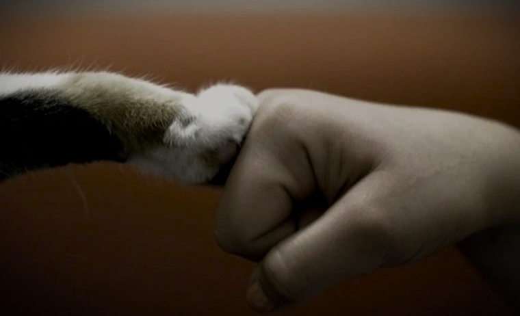
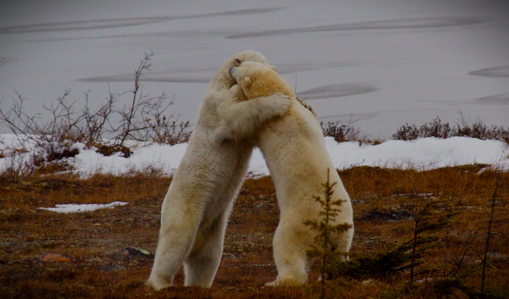
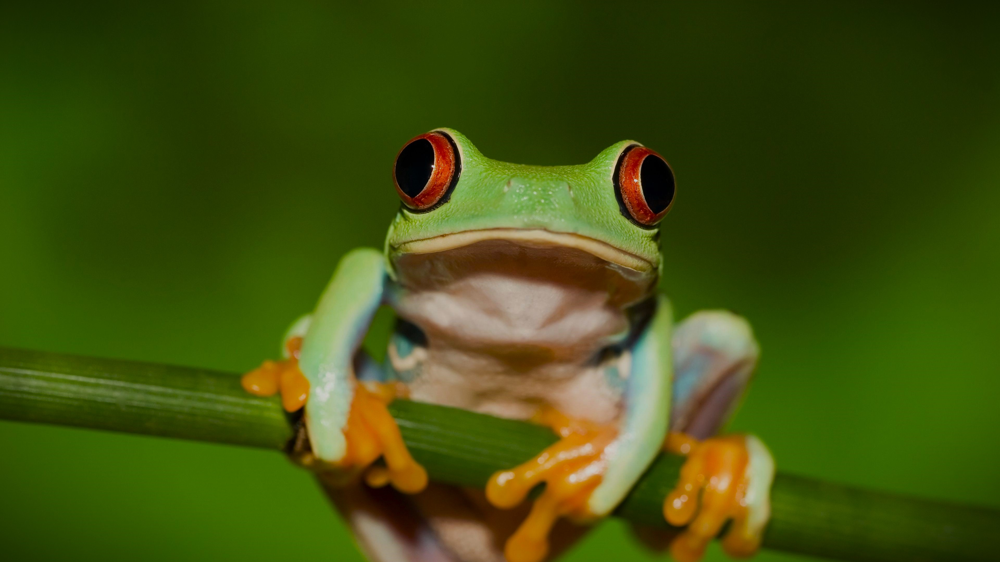

A PawsSafety, é um ambiente virtual dedicado a apoiar a causa animal. Você pode ajudar de várias formas além da doação em dinheiro. Junte-se a nós e transforme vidas.

TODA AJUDA É BEM-VINDA
Há diversas maneiras de contribuir para a causa animal
e intensificar nosso impacto. Ao realizar doações, adotar
um animal de estimação, denunciar casos de maus-tratos
e apoiar iniciativas ambientais, fortalecemos nossa dedicação
e ampliamos nossa influência na defesa desses seres.
CONTRIBUA COM A CAUSA
Na loja PawsSafety, cada compra é uma oportunidade de impactar vidas.
Parte do valor de cada produto adquirido é destinado para doações, auxiliando
outras ONGs comprometidas com a causa animal. Ajude-nos a fazer a diferença,
cada item comprado é um gesto de solidariedade.

A UNIÃO FAZ A FORÇA
Outras ONGs se unem a nós na causa animal. Juntos,
trabalhamos para proteger e cuidar dos animais, apoiando
diversas organizações comprometidas com
o bem-estar animal.

QUEREMOS CONHECER VOCÊ!
Conecte-se conosco pelo LinkedIn
para descobrir mais sobre nossa equipe
e nossas experiências no mundo da causa animal.
Estamos prontos para colaborar
e fazer a diferença junto com você.